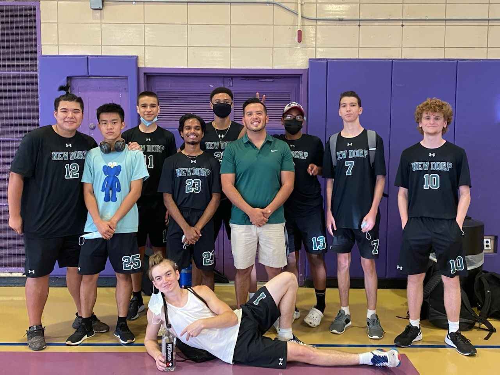
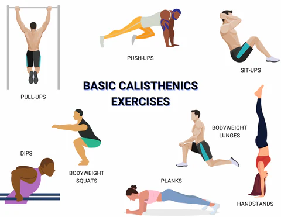
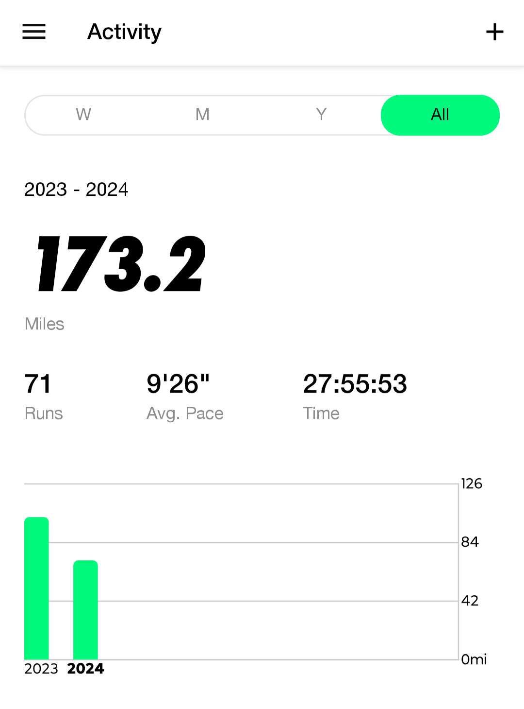

Volleyball
Volleyball has always been one of my favorite sports.
I used to play on my high school team, where I learned not only the skills of the game but also the importance of teamwork and strategy.
It was a great experience that fueled my passion for the sport, and I still enjoying playing it whenever I get the chance.

Calisthenics
I love calisthenics because it allows you to build strength and control over your body without the need for gym equipment.
It's empowering to see progress through movements that use only your body weight, like pull-ups, push-ups, and dips.
Calistenics challenges you to master exercies that require not just strength but also coordination, balance, and flexibility.

Just Run
I started running a year ago, and I've discovered that the hardest part is just getting started.
However, the feeling you get after a good run is incredibly rewarding.
I prefer to run when it is dark outside, listening to music.
There's something calming about the quiet and stillness of the night.
For me, running is more than just exercise, it is a moment of solitude and reflection.
